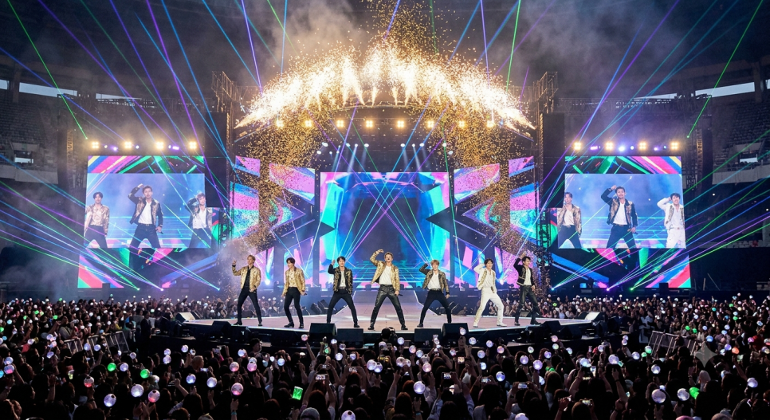

표지
BTS는 출품을
거부했다
받을 가능성이 가장 높은 시점에 스스로 빠졌다.
K팝 · 그래미
상을 못 받을까 봐 피한 게 아닙니다. 받을 가능성이 가장 높은 시점에 거부했습니다. 문제는 그 상이 어떤 상이냐였습니다.
받을 가능성이 가장 높은 시점에 스스로 빠졌다.
11–12대중 투표도 없고 차트 성적과도 무관하다. 음반업계 내부 관계자들이 뽑는다.
레코드 회사와 아카데미 회원이 출품하고, 회원이 표를 던진다.
14–22빅4(올해의 레코드·앨범·노래·신인)는 회원 1만5천 명 전원이 투표한다. “업계 전체가 인정한 최고”라는 상징이 붙는 이유다.
기타상은 장르별 전문가 소집단이 뽑는다.95개 상 중 저녁 생방송에 나오는 건 8~10개뿐. 나머지는 몇 시간 전 사전 행사에서 끝난다.
26–272026년 그래미는 기타상 5개를 신설했고, 그중 하나가 아시아 팝 부문이다.
전 회원이 아닌 소집단이 뽑고, 아시아 음악끼리만 겨루고, 생방송에도 안 나온다.J팝·C팝은 미국 내 인기가 미미하니, 사실상 K팝을 겨냥해 만든 칸이다.
28–337월 29일, 멤버 일곱 명이 같은 문장을 동시에 올렸다.
“음악이 지역이나 언어로 구분되기보다 음악 그 자체로 들리고 사랑받기를 바란다.”정규 5집 ‘아리랑’은 빌보드 앨범 차트 3주 연속 1위. 출품 자격도 됐다. 커리어 정점에서 스스로 빠진 것이다.
37–38AP통신은 신설된 아시아 팝 부문이 아시아 음악가들에게 ‘인종화된 장벽’으로 작용한다고 보도했다.
비서구권 아티스트를 본상에서 밀어내는 또 다른 격리 조치라는 해석이다.
39–45주최 측은 “구분하거나 나누기 위한 것이 아니며, 두 부문을 동시에 노릴 수 있다”고 했다. 규정상 틀린 말은 아니다.
그러나 지적의 핵심은 출품 가능 여부가 아니라 ‘구분 자체’다.별도 칸이 생기는 순간 투표단은 무의식적으로 그쪽으로 표를 몰고, 본상에는 던지지 않는다.
46–58BTS는 2020~2022년 3년 연속 무대에 올랐고, 트로피는 한 번도 못 받았다. 후보만 다섯 번.
2022년 Butter는 빌보드 1위 10주였는데, 수상작은 1위 0주(최고 3위)였다.메르의 표현 — “무대를 장식하게 만들어 시청률은 실컷 뽑아먹고, 상은 한 번도 주지 않았다.”
“BTS가 출품하지 않으면서 신설 트로피의 수상자로 블랙핑크나 스트레이 키즈가 거론되고 있다. ‘드디어 K팝이 그래미를 받았다’며 환호할지, ‘본상이 아니라 기타상을 받았네’라고 아쉬워할지는 개인적 판단이다.”
2026년 7월 29일, BTS 멤버 일곱 명이 같은 문장을 동시에 SNS에 올렸습니다. “올해 그래미에 출품하지 않기로 했으며, 음악이 지역이나 언어로 구분되기보다 음악 그 자체로 들리고 사랑받기를 바란다.”
중요한 건 타이밍입니다. BTS는 지금 커리어의 정점에 있습니다. 3월 발표한 정규 5집 ‘아리랑’은 빌보드 메인 앨범 차트에서 3주 연속 1위였고, 출품 자격도 충족했습니다. 상을 못 받을까 봐 피한 게 아니라, 받을 가능성이 그 어느 때보다 높은 시점에 거부한 겁니다.

먼저 이 상이 어떻게 굴러가는지 봐야 합니다. 그래미는 대중 투표도 없고 차트 성적과도 무관합니다. 음반업계 내부 관계자들이 출품하고, 아카데미 회원들이 표를 던져 뽑습니다.
그런데 본상과 기타상은 사실상 다른 상입니다. 빅4라 불리는 본상 — 올해의 레코드, 올해의 앨범, 올해의 노래, 베스트 신인상 — 은 1만5천여 명 회원 전원이 투표합니다. “음악계 내부자 전체가 인정한 최고”라는 상징이 붙는 이유죠.
반면 기타상은 해당 장르 전문가 소집단이 뽑습니다. 차이는 여기서 끝나지 않습니다. 95개 상 중 저녁 생방송에 시상되는 건 8~10개뿐이고, 나머지는 본 시상식 몇 시간 전 사전 행사에서 조용히 끝납니다. 스타들이 도착하기 전이죠.
2026년 그래미는 기타상 5개를 신설했고, 그중 하나가 아시아 팝 부문입니다. 기타상이니 전 회원이 아닌 소집단이 뽑고, 아시아 음악끼리만 겨루고, 생방송이 아니라 사전 행사에서 시상됩니다.
이 부문은 “K팝·J팝·C팝 등 하나 이상의 아시아 국가 언어를 유의미하게 사용한 작품”이 대상입니다. 그런데 J팝과 C팝은 미국 내 인기가 미미하니, 사실상 K팝을 겨냥해 만든 칸으로 볼 수 있습니다.
AP통신은 이 부문이 아시아 음악가들에게 일종의 ‘인종화된 장벽’으로 작용한다는 기사를 냈습니다. 비서구권 아티스트를 올해의 앨범·올해의 레코드 같은 본상에서 밀어내려는 또 다른 격리 조치라는 해석입니다.
BTS의 발표 하루 만에 주최 측이 직접 나섰습니다. “아시안 팝 부문은 누군가를 구분하거나 나누기 위한 것이 아니다”, “아티스트는 두 부문을 얼마든지 동시에 노릴 수 있다”는 것이었죠. 규정상 틀린 말은 아닙니다.
그러나 지적의 핵심은 출품 가능 여부가 아니라 구분 자체입니다. 별도 칸이 존재하는 순간 투표단은 무의식적으로 그쪽으로 표를 몰고, 본상에는 던지지 않게 되니까요.
BTS는 2020년부터 2022년까지 3년 연속 그래미 무대에 올랐지만 트로피는 한 번도 받지 못했습니다. 후보에만 다섯 번 올랐고요. 당시 수상작과 비교해보면 이렇습니다.
2022년 BTS ‘Butter’는 빌보드 1위 10주, 톱10 10주였습니다. 그해 수상작은 1위 0주(최고 3위), 톱10 19주였고요. 2021년에도 ‘Dynamite’는 1위 3주였는데 수상작은 1위 1주였습니다.
이런 이력 위에 “아시아 팝 트로피를 하나 만들어줄 테니 먹고 떨어져라”로 읽힐 만한 신설 부문이 얹혔으니, 분개했을 가능성이 높다는 게 메르의 추정입니다.
“BTS가 출품을 하지 않으면서, 신설된 아시안 팝 트로피의 수상자로 블랙핑크나 스트레이 키즈가 거론되고 있다. 2027년 2월 시상식에서 ‘드디어 K팝이 그래미를 받았다’며 환호할 것인지, ‘본상이 아니라 기타상을 받았네’라고 아쉬워할 것인지는 개인적 판단이다.”
“그래미상 출품 거부와 같은 논란이 이슈가 되는 것을 보면 K팝이 많이 성장한 것 같다.”